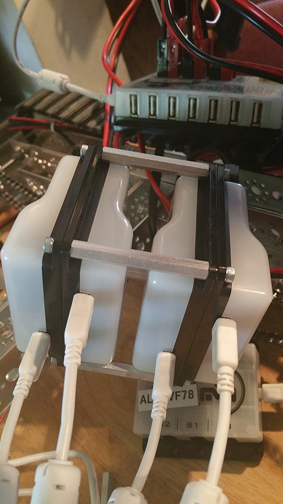

Today, we tried to figure out the best possible way to stick all the motor controllers and the PDM together to minimize the amount of space they take up on the robot. Fitting the finished product into the gap on the back end of our robot would also be a bonus. We had previously thought of one way of doing it:  When placed on the robot, this arrangement fit well and did not take up that much vertical space. However, the wires connecting everything were packed up inside and were ungainly, so we took it apart and started over. The next arrangement we came up with was this: (INSERT PICTURE HERE LATER) This one takes very little vertical space, but no longer fits inside the robot and is quite long.
We will continue experimenting with these different configurations, since our robot is nowhere near its final form. We might even have to disassemble the entire thing quite a few times in order to get it as good as it'll get for the competition. After further testing the current arrangement of the motor controllers and PDM, we'll decide whether we need to change it up again. Better arrangement will make debugging on the robot during code testing much easier, while also increasing overall organization of the apparati on the robot. To other teams looking into wire management, we suggest to choose an easy-to-reach system that can be easy to adjust to allow for accurate debugging. The system we use fits these guidlines and should be a good baseline for other times hoping to achieve the same type of system.